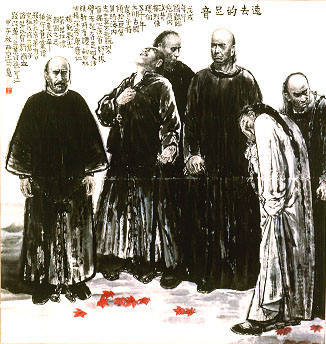

義助慰安婦 —— 李敖百件珍藏義賣藝術品（第23件） 品 名： A23. 王西京「遠去的足音」 預估價： 10 萬 成交價： 40 萬 說 明： 本件作品是李敖的好友陸晉德先生所贈。陸先生曾根據《李敖大全集》第一冊〈北京法源寺〉小說（描述戊戌政變六君子譚嗣同等被殺害的悲壯故事）親自造訪北京法源寺，並且買下此幅王西京先生所作「遠去的足音」送給李敖。李敖認為本件作品可媲美羅丹雕刻的那件慷慨就義的市民，二者同具悲壯之美。 
本件作品是李敖的好友陸晉德先生所贈。陸先生曾根據《李敖大全集》第一冊〈北京法源寺〉小說（描述戊戌政變六君子譚嗣同等被殺害的悲壯故事）親自造訪北京法源寺，並且買下此幅王西京先生所作「遠去的足音」送給李敖。李敖認為本件作品可媲美羅丹雕刻的那件慷慨就義的市民，二者同具悲壯之美。